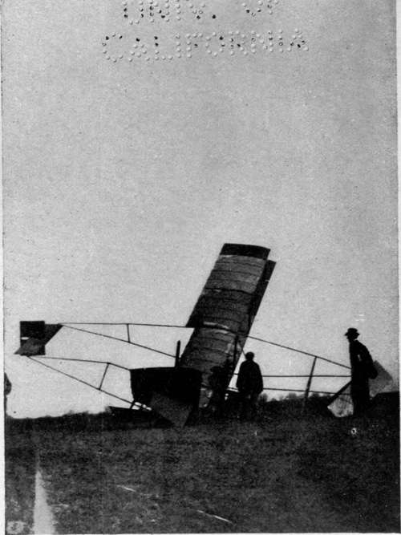

The Flying Machine In War. Part 2
Description
This section is from the book "The New Art Of Flying", by Waldemar Kaempffert. Also available from Amazon: The New Art of Flying.
The Flying Machine In War. Part 2
Fig. 70. One of the numerous accidents that happened to Louis Blériot before he devised his present monoplane.
Photograph by Edwin Levick.
Both Generals Picquart and Meunier, the opposing commanders during the French manoeuvres of 1910, expressed their satisfaction with the performance of aerial scouts. The machines were sent up practically whenever they were ordered to do so. What is more, the aviators carried out orders to the letter, and often under very unfavourable weather conditions. It was doubted at first whether they would be able to report with any degree of definiteness upon the position and number of the enemy. At a height of fifteen hundred feet, it seems quite possible, however, for a practised man to discover the character of the troops below him and to ascertain whether they are infantry, cavalry, or artillery. Artillery is easily enough distinguished by the intervals between the horses. By counting the number of gun caissons the strength of the battery can be ascertained. The strength of cavalry and infantry is arrived at by counting the companies or other group formations.
During the manœuvres in question it was sometimes difficult at the first glance to gain definite information of troops in battle formation, and at times it was possible to distinguish friend from foe only by the direction of fire. Lieutenant Sido, a French army officer and aerial scout, in commenting upon the possibility of discovering at a very great height the position of an enemy's forces, stated that a man who goes up in an aeroplane for the first time cannot distinguish anything below him; that many flights are necessary before he can form a judgment of the terrane below; that good eyesight, coupled with experience, are necessary; that field glasses are needed only rarely; and that at a very great height cavalry is somewhat harder to make out than artillery.
Although aeroplanes carrying but a single man did much valuable work during the manoeuvres, it is generally agreed that the military aeroplane must carry at least two men, one of whom shall act as a pilot, and the other as an observer. As the field of the military aeroplane is extended, it is very likely that noncommissioned officers, and even ordinary soldiers, will be entrusted with the piloting of the machine. The observer must always be an intelligence officer of experience. Lieutenant (now Captain) Bellenger, who distinguished himself by his effective reconnaissances in a Blériot, maintains that one man will answer for ordinary scouting. When it is considered, however, that the machine is to be controlled, that maps are to be read, that the enemy's strength and disposition are to be discovered, that notes and sketches are to be made, it seems obvious that more than one man will be required.
It may be doubted whether the aeroplane will entirely supplant the usual forces employed for reconnaissance. The mist which usually conceals the ground early in the morning will probably interfere seriously with the activities of the aerial scout, not to mention ordinary fogs. Night marches and cavalry raids will probably be necessary as they have been in the past, and troops will mask themselves as they always have by natural and artificial concealments.
Fig. 71. A biplane that came to grief because of defective lateral control.
Photograph by Edwin Levick.
No doubt new stratagems will be devised to deceive the aerial eye. It is conceivable that a regiment may group itself in battalion or even brigade form, so that its strength may be overestimated. Other stratagems suggest themselves, such as the feigned movements which completely misled the observers in dirigible airships during the German army-manœuvres of 1910.
It is highly advisable that the aeroplane be fitted, if possible, with some form of wireless telegraph apparatus, so that the commanding officer may be kept fully informed of each new discovery. The necessity of reporting in person means the return of the aeroplane to headquarters. Up to the present time, no very successful attempt has been made in this direction, although the success of the wireless installation on the dirigible " Clement-Bayard II " would seem to indicate that the problem is not beyond solution.
For ordinary reconnaissance on the battlefield elaborate notes are not essential. The notes that Captain Bellenger took were of the most meagre character, — simply sufficient to refresh his memory. They were mere memoranda which read, for example, " 7 h. 47 m. Mortvillers, 3 batteries." Such a note was all that he required when making his oral report to refresh his memory. For siege work, on the other hand, Bellenger insists on much more detailed information. In reconnoitring of that character the chief work to be performed by the man in the air will be the precise indication of the point to be shelled. An error of only one hundred and fifty feet in giving that position may nullify the besieging commander's best efforts. Reconnaissances in force to ascertain the enemy's disposition, a tactical necessity which may require a detachment of several thousand men from the main army for a considerable period of time will probably be of infrequent occurrence in the future warfare. An aeroplane will accomplish the same result in a fraction of the time. One of the bloodiest encounters the world has ever seen was the Japanese attack on " 203 Meter Hill." Yet the sole purpose of that great slaughter was the placing of two or three men at the summit of the hill to direct the fire of the Japanese siege guns upon the Russian fleet in the harbour of Port Arthur.
Major G. O. Squier of the United States Signal Corps has pointed out that the realisation of aerial navigation for military purposes brings forward new questions as regards the limitation of frontiers. As long as military operations are confined to the surface of the earth, it has been the custom to protect the geographical limits of a country by ample preparations in time of peace, such as a line of fortresses properly garrisoned. At the outbreak of war these boundaries represent real and definite limits to military operations. Excursions into the enemy's territory usually require the backing of a strong military force. Under the new conditions, however, these geographic boundaries no longer offer the same definite limits to military movements. With a third dimension added to the theatre of operations, it will be possible to pass over this boundary on rapid raids for obtaining information, accomplishing demolitions, etc., returning to safety in a minimum time. Major Squier, therefore, regards the advent of military scouts of the air as, in a measure, obliterating present national frontiers in conducting military operations.
Continue to: